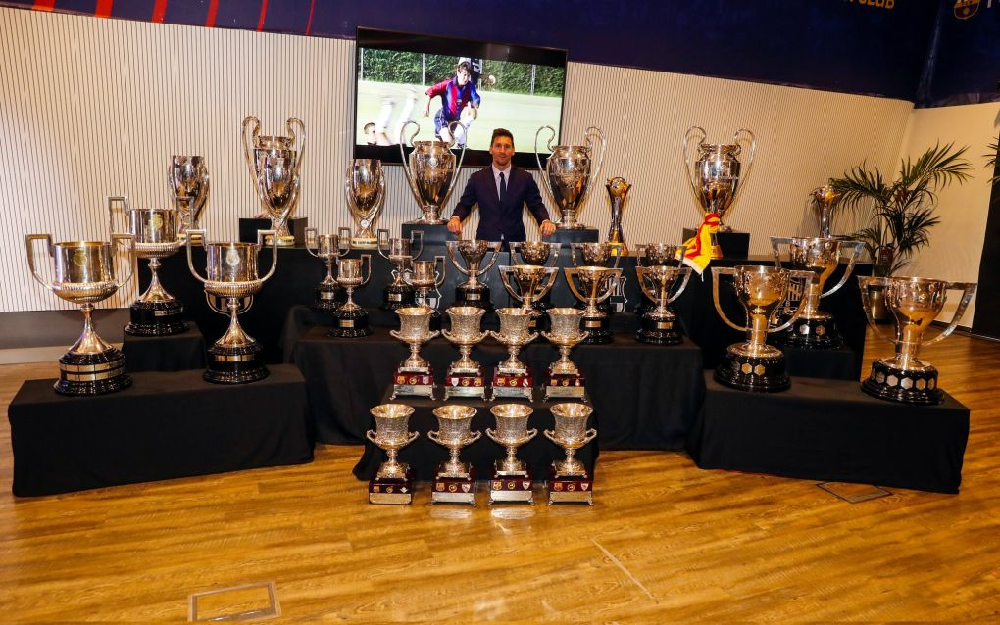
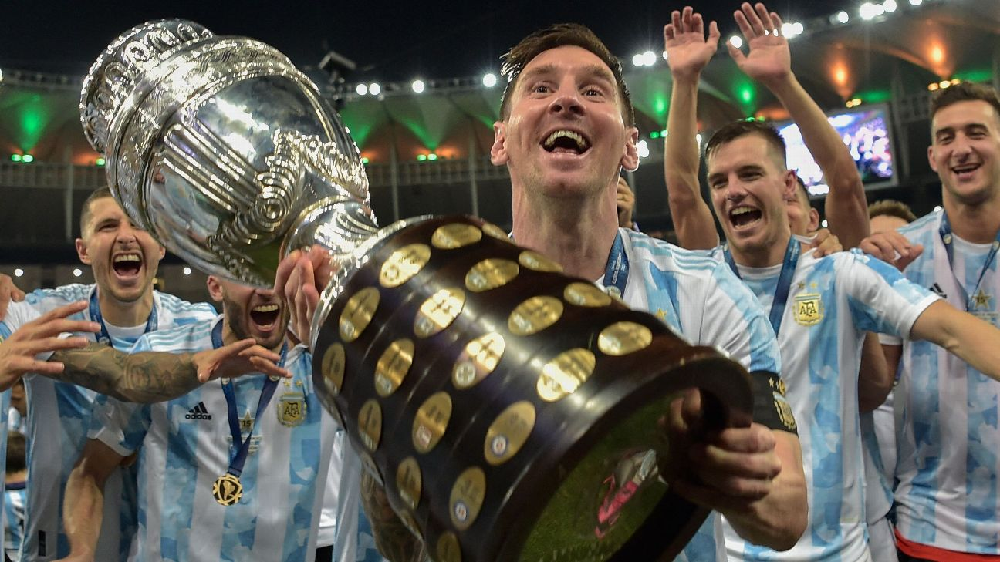

Lionel Messi, a forward for French club Paris Saint-Germain and the Argentinian national team, has had an illustrious career ever since he broke into the starting eleven of FC Barcelona in 2005. Messi moved from the youth academy at Newell's Old Boys in Argentina to La Masia, FC Barcelona's youth academy, after impressing Barcelona's scouts. He played his way through the youth teams until the first team coach gave him his first team debut at the age of 16. Messi played for Barcelona for the next 16 years before moving to French club Paris Saint-Germain on a free transfer. Since making his debut, he has played 798 matches, scored 676 goals and given 407 assists at club level. He has played for the Argentinian national team on 158 ocassions and in those 158 matches, scored 80 goals and given 51 assists.

Messi is one of the most decorated players, having won 35 club trophies, 1 international trophy, and countless individual awards. Among the individual awards are 7 Ballon D'ors, awarded to the best player of the year, 2 UEFA Men's Player of the Year, awarded to the best player in Europe, and 6 Golden Boots, awarded to the highest goalscorer of the season.
 List of Messi's major trophies and awards:
- 10 La Liga titles
- 7 Copa Del Rey titles
- 8 Supercopa de España titles
- 4 UEFA Champions League titles
- 3 UEFA Super Cup titles
- 3 FIFA Club World Cup titles
- 1 Copa America title
- 7 Ballon D'ors
- 6 Golden Boots
- 6 La Liga Best Player awards
- FIFA World Player of the Year (in 2009)
- The Best FIFA Men's Player (in 2019)
- FIFA World Cup Golden Ball (in 2014)
List of notable records held by Messi:
- Most Ballon D'ors: 7
- Most Golden Boots: 6
- Guinness World Record for top goalscorer for club and country in a calendar year: 91 goals in 2012
- Most goals for a single club: 672 goals for FC Barcelona
- Most assists for a single club: 268 for FC Barcelona
- Most trophies won with a single club: 35 for FC Barcelona
- Most goals scored by a South American player: 80
- Most goals scored in a domestic league: 474 goals in La Liga
- Most Man of the Match Awards at the FIFA World Cup: 6